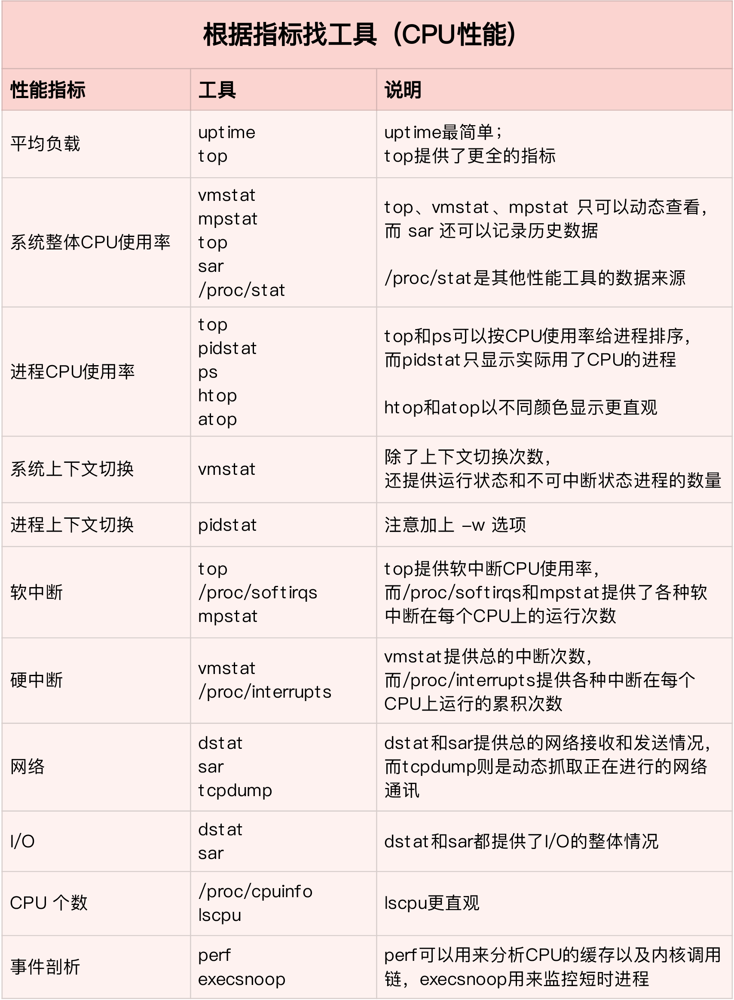

CPU性能调优¶

CPU性能指标¶
CPU使用率¶
CPU使用率，是指单位时间内CPU使用情况的统计，以百分比的方式展示。
与CPU使用率相关的指标有许多：
- user：用户态时间
- nice：低优先级用户态时间
- system：内核态时间
- idle：空闲时间
- iowait：等待I/O完成的时间
- irq：硬中断时间
- softirq：软中断时间
- steal：管理程序时间
- guest：运行虚拟处理器的时间
- guest_nice：低优先级运行虚拟处理器的时间
使用perf top实时显示占用CPU时钟最多的函数或者指令：
$ perf top
Samples: 833 of event 'cpu-clock', Event count (approx.): 97742399
Overhead Shared Object Symbol
7.28% perf [.] 0x00000000001f78a4
4.72% [kernel] [k] vsnprintf
4.32% [kernel] [k] module_get_kallsym
3.65% [kernel] [k] _raw_spin_unlock_irqrestore
...
输出结果的第一行分别代表采样数（Samples）、事件类型（event）、事件计数（Event count）。
下方的表格各列的含义是：
- Overhead：当前函数或者指令占用的CPU时钟百分比
- Shared Object：函数或者指令所在的动态链接库名
- Symbol：函数或者指令名，16进制地址代表未知符号
perf top不保存数据，我们可以使用perf record和perf report命令来记录和分析数据，同时加上-g参数以显示调用关系链。
平均负载¶
每当系统变慢时，我们通常做的第一件事就是执行top或者uptime命令来了解下系统的负载情况，比如：
对应的含义是：
02:34:03 //当前时间
up 2 days, 20:14 //系统运行时间
1 user //正在登录用户数
load average: 0.63, 0.83, 0.88 //1分钟、5分钟、15分钟的平均负载
什么是平均负载？平均负载是指单位时间内，系统处于可运行状态和不可中断状态的平均进程数，也就是平均活跃进程数，它和CPU使用率并没有直接关系。
所谓可运行状态的进程，是指正在使用CPU或者正在等待CPU的进程，也就是我们使用ps命令看到的，处于R状态（Running或Runnable）的进程。
不可中断状态的进程则是正处于内核态关键流程中的进程，并且这些流程不能被打断。比如最常见的是等待磁盘I/O的进程，也就是我们使用ps命令看到的，处于D状态（Uninterruptible Sleep，也被称为Disk Sleep）的进程。当一个进程向磁盘读写数据时，它需要等待磁盘的回应，在这个过程中是不能被打断的，否则就会出现磁盘和内存数据不一致的情况。
所以平均负载可以简单地理解为是平均活跃进程数，最理想的情况是每个CPU刚好运行一个进程，这时的平均负载就等于CPU的个数。比如在只有2个CPU的系统上，如果平均负载是2，那么意味着所有的CPU都刚好被完全占用；如果平均负载是4，意味着有一半的进程竞争不到CPU。我们可以通过查询/proc/cpuoinfo来获取当前系统有几个CPU。
平均负载有三个值，我们需要综合查看，分析系统负载的趋势：
- 如果这三个值相差不大，说明系统运行平稳。
- 如果1分钟的值远小于15分钟的值，说明系统最近的负载在减少。
- 而反过来，如果1分钟的值远大于15分钟的值，说明系统最近的负载在增加。
平均负载和CPU使用率不一定完全对应，比如：
- CPU密集型进程，使用大量CPU也会导致平均负载升高，此时两者对应。
- I/O密集型进程，等待I/O会导致平均负载升高，但是CPU使用率不一定很高。
- 大量等待CPU的进程调度会导致平均负载升高，此时的CPU使用率也会比较高。
上下文切换¶
众所周知，Linux是一个多任务操作系统，支持远大于其CPU核心数的进程运行。这些进程并非同时运行，而是使用CPU的调度算法轮流执行。在每个任务运行前，CPU需要知道任务从哪里加载、运行，也就是说系统需要提前设置寄存器以及程序计数器的内容，这种环境被称为CPU上下文。
而CPU上下文切换，就是把上一个任务的环境保存起来，然后加载下一个任务的环境。暂时挂起的任务会在未来的某个时间点上继续执行。
由于运行任务的不同，CPU上下文切换也需要根据不同的环境分为不同的场景：
- 进程上下文切换：进程是Linux系统中最基本的执行单元，进程的切换由操作系统内核来完成，这个过程需要保存和恢复进程的各种寄存器状态、内存页等数据，因此，进程的上下文切换开销比较大。
- 线程上下文切换：线程是轻量级的进程，同一进程的多个线程之间是共享进程的上下文的，因此，线程的上下文切换比进程的上下文切换要快得多。
- 中断上下文切换：为了快速响应硬件的事情，一个硬件中断会随时打断进程的正常执行，转而执行中断处理程序。在打断其他进程时，就需要将进程当前的状态保存下来，以便后续恢复。这个过程就叫做中断上下文切换。
对于进程上下文切换这里需要说明一下。一次系统调用涉及到从用户态到内核态，再从内核态到用户态，一共两次CPU上下文切换。
对于一般的进程之间的上下文切换，只有在进程调度的时候才会用到。Linux为每个CPU都维护了一个就绪队列，将活跃进程（正在运行和等待运行的进程）按照优先级和等待时间排序，然后选择最需要CPU的进程，更详细的介绍请看进程调度。进程在以下场景中，会触发进程调度：
- 分配个进程的时间片耗尽。
- 进程在等待某个资源。
- 进程调用
sleep()等函数主动挂起。 - 更高优先级的进程需要运行。
- 发生硬件中断。
上下文切换是衡量性能的一个重要指标，它可以是自愿的，也可以是非自愿的：
- 自愿上下文切换变多了，说明进程都在等待资源，可能发生了I/O问题。
- 非自愿上下文切换变多了，说明进程都在被强制调度，可能发生了CPU竞争问题。
CPU缓存命中率¶
CPU具有L1、L2、L3三级缓存，其中L3是共享的。从L1到L3，缓存的大小依次增加，但是性能依次降低。它们的命中率，衡量的是CPU缓存的复用情况。
CPU性能分析工具¶

其中top、vmstat、pidstat几乎涵盖了所有重要的CPU性能指标。
使用top命令动态监测CPU：
$ top
PID USER PR NI VIRT RES SHR S %CPU %MEM TIME+ COMMAND
28961 root 20 0 43816 3148 4040 R 3.2 0.0 0:00.01 top
620 root 20 0 37280 33676 908 D 0.3 0.4 0:00.01 app
1 root 20 0 160072 9416 6752 S 0.0 0.1 0:37.64 systemd
1896 root 20 0 0 0 0 Z 0.0 0.0 0:00.00 devapp
2 root 20 0 0 0 0 S 0.0 0.0 0:00.10 kthreadd
4 root 0 -20 0 0 0 I 0.0 0.0 0:00.00 kworker/0:0H
6 root 0 -20 0 0 0 I 0.0 0.0 0:00.00 mm_percpu_wq
7 root 20 0 0 0 0 S 0.0 0.0 0:06.37 ksoftirqd/0
...
- 使用
uptime查看系统平均负载：
- 使用
mpstat查看CPU使用率：
# -P ALL 表示监控所有CPU，后面数字5表示间隔5秒后输出一组数据
$ mpstat -P ALL 5
Linux 4.15.0 (ubuntu) 09/22/18 _x86_64_ (2 CPU)
13:30:06 CPU %usr %nice %sys %iowait %irq %soft %steal %guest %gnice %idle
13:30:11 all 50.05 0.00 0.00 0.00 0.00 0.00 0.00 0.00 0.00 49.95
13:30:11 0 0.00 0.00 0.00 0.00 0.00 0.00 0.00 0.00 0.00 100.00
13:30:11 1 100.00 0.00 0.00 0.00 0.00 0.00 0.00 0.00 0.00 0.00
- 使用
pidstat查看进程的CPU使用率：
# 间隔5秒后输出一组数据
$ pidstat -u 5 1
13:37:07 UID PID %usr %system %guest %wait %CPU CPU Command
13:37:12 0 2962 100.00 0.00 0.00 0.00 100.00 1 stress
- 使用
vmstat查看上下文切换情况：
# 每隔5秒输出1组数据
$ vmstat 5
procs -----------memory---------- ---swap-- -----io---- -system-- ------cpu-----
r b swpd free buff cache si so bi bo in cs us sy id wa st
0 0 0 7005360 91564 818900 0 0 0 0 25 33 0 0 100 0 0
cs：每秒上下文切换次数。
in：每秒中断次数。
r：就绪队列长度。
b：等待资源的进程数。
- 使用
pidstat查看每个进程上下文切换情况：
# 每隔5秒输出1组数据
$ pidstat -w 5
Linux 4.15.0 (ubuntu) 09/23/18 _x86_64_ (2 CPU)
08:18:26 UID PID cswch/s nvcswch/s Command
08:18:31 0 1 0.20 0.00 systemd
08:18:31 0 8 5.40 0.00 rcu_sched
...
cswch/s：每秒自愿上下文切换次数。
nvcswch/s：每秒非自愿上下文切换次数。
- 使用
watch查看软中断使用情况：
$ watch -d cat /proc/softirqs
CPU0 CPU1
HI: 0 0
TIMER: 1083906 2368646
NET_TX: 53 9
NET_RX: 1550643 1916776
BLOCK: 0 0
IRQ_POLL: 0 0
TASKLET: 333637 3930
SCHED: 963675 2293171
HRTIMER: 0 0
RCU: 1542111 1590625
- 使用
dstat查看CPU和I/O使用情况：
# 间隔1秒输出10组数据
$ dstat 1 10
You did not select any stats, using -cdngy by default.
--total-cpu-usage-- -dsk/total- -net/total- ---paging-- ---system--
usr sys idl wai stl| read writ| recv send| in out | int csw
0 0 96 4 0|1219k 408k| 0 0 | 0 0 | 42 885
0 0 2 98 0| 34M 0 | 198B 790B| 0 0 | 42 138
0 0 0 100 0| 34M 0 | 66B 342B| 0 0 | 42 135
0 0 84 16 0|5633k 0 | 66B 342B| 0 0 | 52 177
0 3 39 58 0| 22M 0 | 66B 342B| 0 0 | 43 144
0 0 0 100 0| 34M 0 | 200B 450B| 0 0 | 46 147
0 0 2 98 0| 34M 0 | 66B 342B| 0 0 | 45 134
0 0 0 100 0| 34M 0 | 66B 342B| 0 0 | 39 131
0 0 83 17 0|5633k 0 | 66B 342B| 0 0 | 46 168
0 3 39 59 0| 22M 0 | 66B 342B| 0 0 | 37 134
...
- 使用
sar查看系统的网络收发情况：
# -n DEV 表示显示网络收发的报告，间隔1秒输出一组数据
$ sar -n DEV 1
15:03:46 IFACE rxpck/s txpck/s rxkB/s txkB/s rxcmp/s txcmp/s rxmcst/s %ifutil
15:03:47 eth0 12607.00 6304.00 664.86 358.11 0.00 0.00 0.00 0.01
15:03:47 docker0 6302.00 12604.00 270.79 664.66 0.00 0.00 0.00 0.00
15:03:47 lo 0.00 0.00 0.00 0.00 0.00 0.00 0.00 0.00
15:03:47 veth9f6bbcd 6302.00 12604.00 356.95 664.66 0.00 0.00 0.00 0.05
IFACE：网卡
rxpck/txpck：每秒接收与发送的数据包
rxkB/txkB：每秒接收与发送的千字节
rxcmp/txcmp：每秒接收与发送的压缩数据包
rxmcst/txmcst：每秒接收与发送的多播数据包
%ifutil：网络接口的使用率
- 使用
tcpdump抓取网络包：